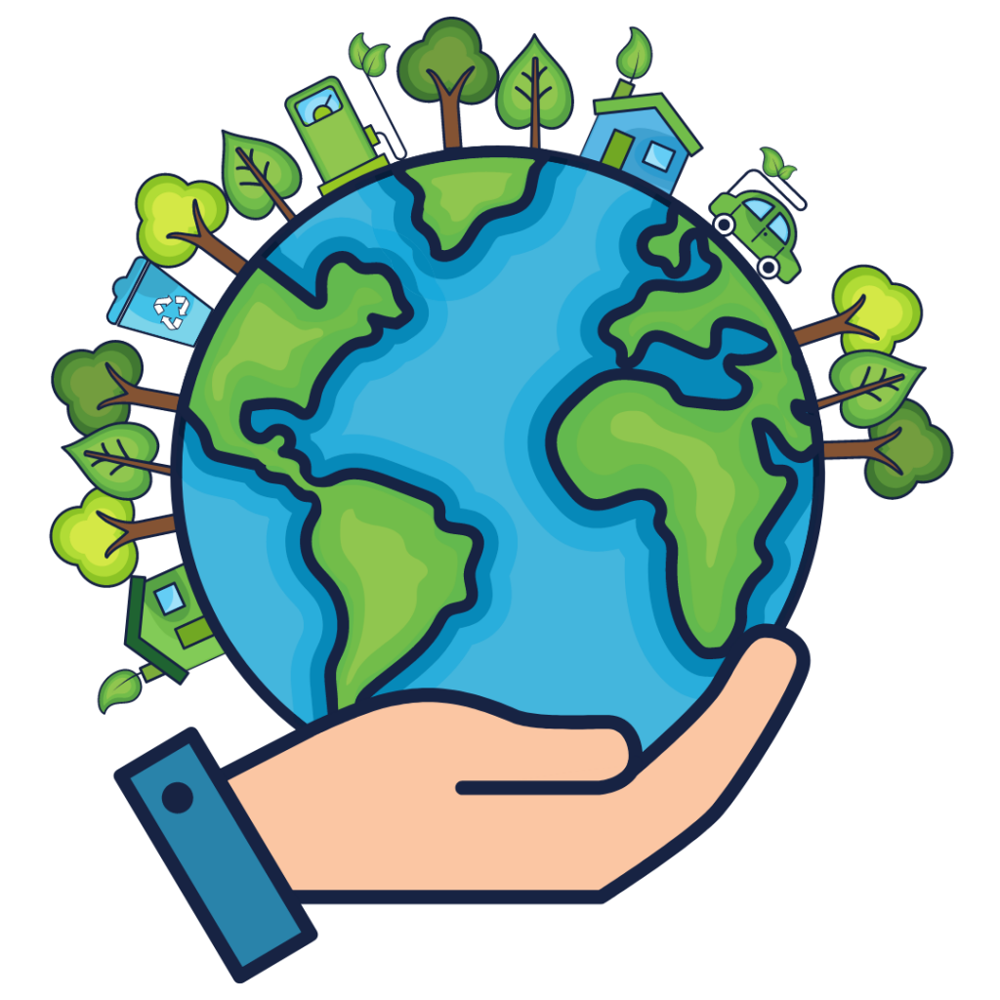

¿Por qué el Medio Ambiente es Importante?
El medio ambiente es esencial para la vida en la Tierra, la salud y el bienestar de la humanidad, y la estabilidad a largo plazo de nuestro planeta. Cuidar y preservar el medio ambiente es una responsabilidad compartida que tiene implicaciones profundas para la supervivencia y el bienestar de todas las especies, incluyendo la nuestra.
Problemas Ambientales
Los problemas del medio ambiente son cuestiones críticas que afectan la salud y la sostenibilidad del planeta y de todas las formas de vida que lo habitan.
Cambio climático:
El cambio climático es causado por la emisión excesiva de gases de efecto invernadero, principalmente dióxido de carbono.
Pérdida de biodiversidad:
La pérdida de biodiversidad se debe a la destrucción de hábitats naturales y la sobreexplotación de recursos naturales.
Contaminación del aire y del agua:
La contaminación del aire y del agua es causada por la liberación de sustancias químicas y contaminantes tóxicos en la atmósfera y en los cuerpos de agua.
Deforestación:
La deforestación, que implica la tala de árboles a gran escala para la obtención de madera y la conversión de tierras forestales en terrenos agrícolas o urbanos, ha llevado a la pérdida de bosques en todo el mundo.
Posibles Soluciones
Existen diversas soluciones y estrategias que pueden contribuir a mejorar el medio ambiente. Estas acciones pueden ser implementadas a nivel individual, comunitario, gubernamental e internacional.
Transición a fuentes de energía limpias:
Fomentar la inversión en energías renovables, como la solar, eólica, hidroeléctrica y geotérmica, para reducir la dependencia de los combustibles fósiles y disminuir las emisiones de gases de efecto invernadero.
Eficiencia energética:
Promover la eficiencia energética en hogares, industrias y transporte, lo que implica el uso de tecnologías más eficientes y prácticas de conservación de energía.
Acciones Personales
Las acciones personales pueden desempeñar un papel importante en la mejora del medio ambiente.
Reducir, reutilizar y reciclar:
Minimiza la generación de residuos reduciendo tu consumo, reutilizando objetos siempre que sea posible y reciclando materiales como papel, cartón, vidrio y plástico.
Ahorrar energía:
Reduce tu huella de carbono disminuyendo el consumo de energía en tu hogar. Apaga las luces y los dispositivos electrónicos cuando no los uses, utiliza bombillas de bajo consumo y considera la instalación de paneles solares si es posible.
Ahorrar agua:
Utiliza el agua de forma eficiente, reparando las fugas y evitando el desperdicio. Opta por electrodomésticos y grifos de bajo consumo de agua.
Consumo responsable:
Elige productos y alimentos que sean producidos de manera sostenible y que tengan un menor impacto ambiental. Da preferencia a alimentos locales y de temporada.